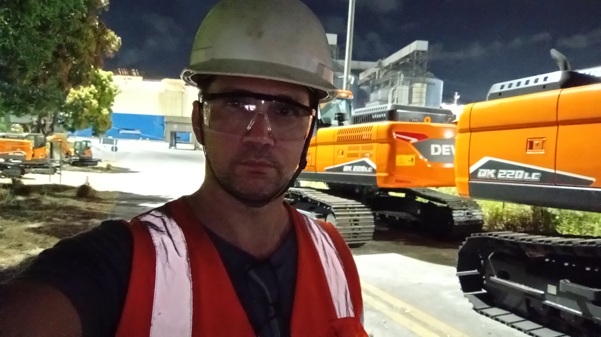
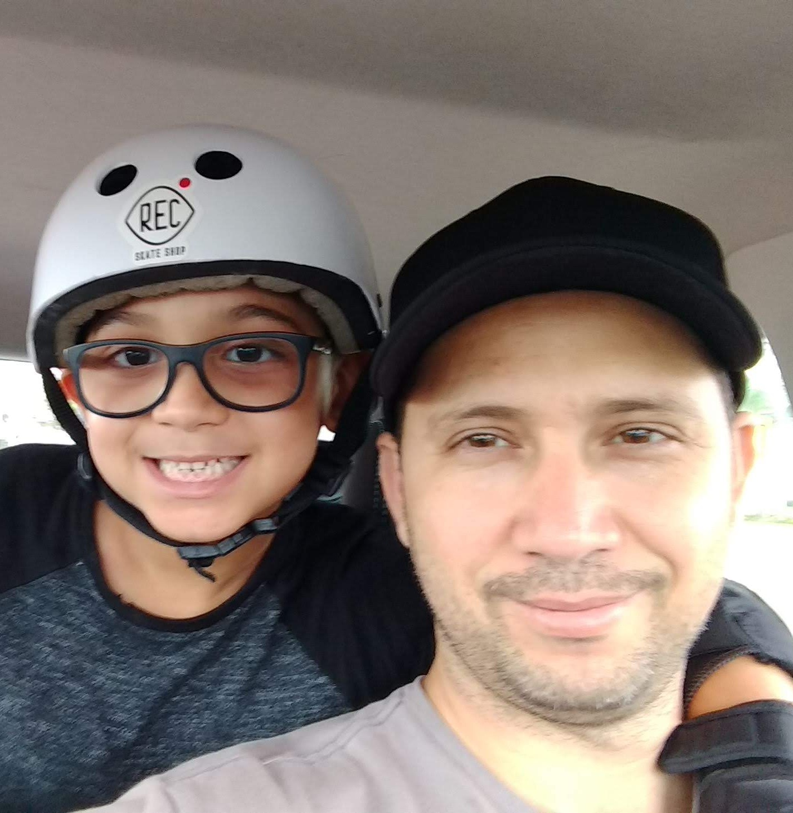
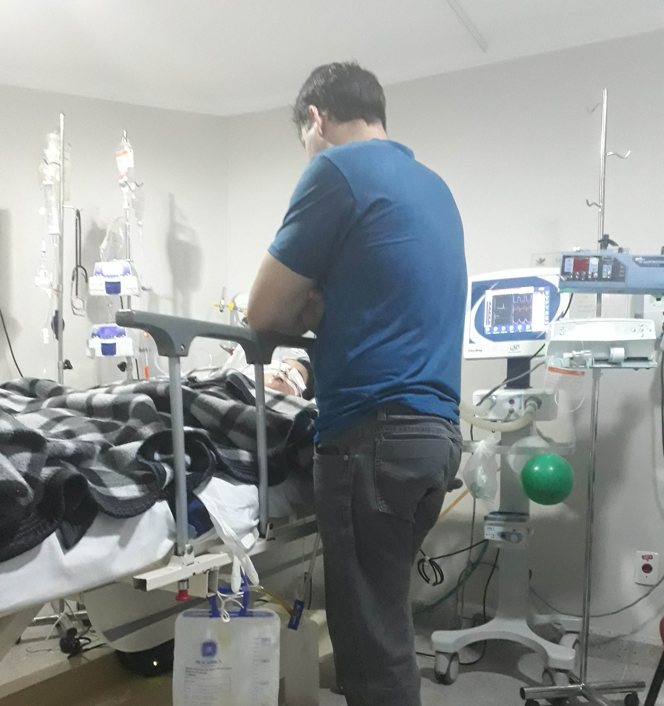
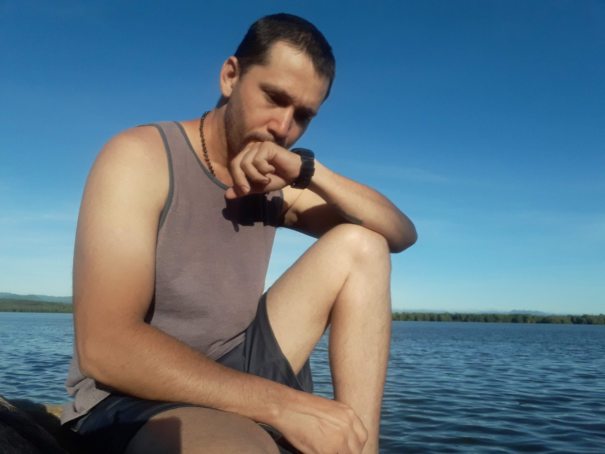
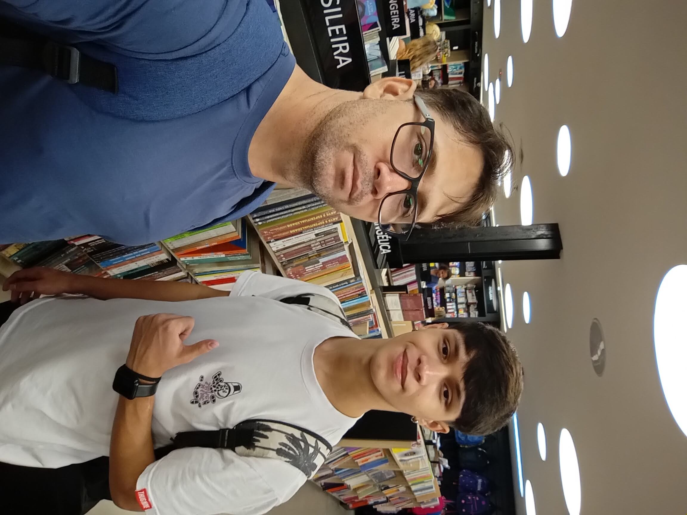

I am not asking you
to save me.

Port of Vila Velha · Brazil · 2023
My name is Harlem Brandemburg. I'm 45 years old, Brazilian, and I work the night shift as a heavy machinery operator at a port. I have a son named Rian — 19 years old, studying Workplace Safety at a federal institute by day and Web Programming at night. He is my reason for still being here.
I need to tell you something before you decide whether to trust me with a dollar. Not to gain your sympathy — but because I don't have the right to bury my own story.
In 2019, I lost my son Kauan. He was 7 years old. He had a rare vascular tumor called gigantic lymphohemangioma — treated at the only hospital in Brazil equipped to handle it. He fought from his very first days. I spent every cent of my severance, quit my engineering degree, and made constant trips to São Paulo for treatment — while keeping our family rooted in Vitória, where our support network was. I made the choices a father makes.
He didn't make it. He was buried on October 23, 2019 — my 39th birthday.

Kauan · September 2019

A.C. Camargo · October 2019
I fell into a silent depression. The kind nobody sees. I used every credit I had left to pay for a psychologist, a psychiatrist, and medication — during a global pandemic, alone, with no income. I survived it — not quickly, not easily — but I did.

Vitória · December 2020 · One day after
What pulled me back was Rian. A son I discovered I had in 2018 — while Kauan was still fighting. He is now 19, studying at a federal institute by day and learning to code at night. He came to live with me in 2024. I look at him and I see purpose. I see a second chance I did not expect.
Today I'm enrolled in Accounting. I work nights at the port. But the company demobilized the operation — I've been at home for a month, and I know my income is ending. I'm trying to finish a degree, support my son, and not lose my home. All at once.
I am not a victim. I am a man in the middle of the crossing.

Harlem & Rian · 2024
Baptism · December 2025
This is not a crowdfunding campaign. There's no reward, no product, no cause beyond a real life. The question is simple: can the internet trust a stranger with one dollar? I'm the stranger. You decide.
The experiment
in three phases.
Two ways
to participate.
PayPal — fastest, simplest. Click the button above. Every contribution is logged publicly.
Bitcoin — for those who prefer it. Wallet address below. All transactions are on-chain and verifiable.
[Bitcoin address — to be added]
Everything received goes toward: rent, my son's education expenses, my university fees, and stabilizing a life that's been unstable for too long.
What you're
probably wondering.
Is this real?
Yes. My name is Harlem Brandemburg. I live in Brazil. I have medical documentation of my son Kauan's treatment from 2013–2019. I'm willing to answer direct questions.
Where does the money go?
Rent, my son Rian's education costs, my university enrollment, and basic stability. I won't pretend otherwise.
Why $1?
Because the amount isn't the point. The act of trusting a stranger is. A dollar is small enough to be risk-free. That's the experiment.
What do I get?
Nothing material. You get to know whether you're the kind of person who trusts a stranger. Some people are. Some aren't. Both are honest answers.
How do I know this isn't a scam?
You don't — not with certainty. That's the whole point. I've shared my real name, my real story, and my real situation. The rest is up to you.